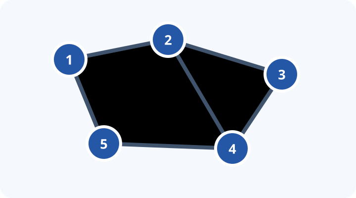

Lecture 1 — Trees as Arrays
Euler tours, LCA, and range-query structures
Goal
Learn to turn a tree into an array so that familiar range-query tools can answer subtree and ancestry questions efficiently.
Core sequence: Subtree Queries → Company Queries II → Counting Paths
Prerequisites: DFS, arrays, and a Fenwick tree or segment tree.
Main pattern: tree → intervals / ancestors → range structure or accumulation.
Problem sequence
1. Subtree sums and intervals
- Subtree Queries — CSES: point-update a node and query its subtree sum. This is the first implementation of Euler-tour flattening plus a Fenwick tree or segment tree.
- Subtree Sum: use the same setup as a short warm-up. First ask students how the answer would be computed if every subtree were already an interval.
#include <iostream>
#include <vector>
#include <unordered_map>
#include <unordered_set>
#include <algorithm>
#include <sstream>
#include <cmath>
#include <map>
#include <set>
#include <numeric>
#include <climits>
using namespace std;
#define DEBUG 0
#if DEBUG
#define HAS_EXTRA 1
#include "../codeforces/debug.hpp"
#endif
typedef long long int ll;
typedef vector<int> vint;
bool intersect(int l1, int r1, int l2, int r2)
{
return max(l1, l2) <= min(r1, r2);
}
class SegTree
{
void _update(int p, ll val, int cp, int l, int r)
{
if (p < l || p > r)
return;
if (l == r)
{
tree[cp] = val;
return;
}
int tm = (l + r) / 2;
_update(p, val, cp * 2, l, tm);
_update(p, val, cp * 2 + 1, tm + 1, r);
tree[cp] = tree[cp * 2] + tree[cp * 2 + 1];
}
void build(vector<ll> &a, int v, int tl, int tr)
{
if (tl == tr)
{
tree[v] = a[tl];
}
else
{
int tm = (tl + tr) / 2;
build(a, v * 2, tl, tm);
build(a, v * 2 + 1, tm + 1, tr);
tree[v] = tree[v * 2] + tree[v * 2 + 1];
}
}
ll _sum(int v, int tl, int tr, int l, int r)
{
if (l > r)
return 0LL;
if (l == tl && r == tr)
return tree[v];
int tm = (tl + tr) / 2;
return _sum(v * 2, tl, tm, l, min(r, tm)) +
_sum(v * 2 + 1, tm + 1, tr, max(l, tm + 1), r);
}
public:
vector<ll> tree;
int size;
SegTree(vector<ll> s)
{
size = s.size();
tree.resize(4 * size);
build(s, 1, 0, size - 1);
}
ll sum(int l, int r)
{
return _sum(1, 0, size - 1, l, r);
}
void update(int pos, ll v)
{
_update(pos, v, 1, 0, size - 1);
}
};
void DFSFlattening(
vector<vector<ll>> &graph,
vector<ll> &nodes,
int node,
int prev,
vector<ll> &res,
vint &start,
vint &end)
{
start[node] = res.size();
res.push_back(nodes[node]);
for (int child : graph[node])
{
if (child == prev)
continue;
DFSFlattening(graph, nodes, child, node, res, start, end);
}
end[node] = res.size() - 1;
}
int main()
{
ios::sync_with_stdio(false);
cin.tie(nullptr);
ll n, q;
cin >> n >> q;
vector<ll> nodes(n + 1);
for (ll i = 0; i < n; i++)
cin >> nodes[i + 1];
vector<vector<ll>> edges(n + 1);
for (ll i = 0; i < n - 1; i++)
{
ll f, t;
cin >> f >> t;
edges[f].push_back(t);
edges[t].push_back(f);
}
vector<ll> flat;
vint start(n + 1);
vint end(n + 1);
DFSFlattening(edges, nodes, 1, -1, flat, start, end);
SegTree sg(flat);
for (ll i = 0; i < q; i++)
{
ll type;
cin >> type;
if (type == 1)
{
ll s, x;
cin >> s >> x;
sg.update(start[s], x);
}
else
{
ll s;
cin >> s;
ll res = sg.sum(start[s], end[s]);
cout << res << '\n';
}
}
}2. Ancestors and lowest common ancestors
- Company Queries I — CSES: find the
kth ancestor. Binary lifting without any LCA logic.
Review the CP-Algorithms guide to binary lifting for LCA. For this problem, use its up[u][j] table only for upward jumps: up[u][j] is the 2^jth ancestor of u.
- Company Queries II — CSES: answer LCA queries. This is the natural continuation after
kth ancestor. - Distance Queries — CSES: connect LCA to the formula
dist(a, b) = depth[a] + depth[b] - 2 × depth[lca(a, b)].
3. Combining the ideas
- Path Queries — CSES: update a node value and query a root-to-node path. Discuss what needs to be stored differently from a subtree sum.
- Counting Paths — CSES: the capstone. For every requested path
(a, b), add a small number of changes and combine them with one final DFS.
For Counting Paths, if w = lca(a, b), apply the tree-difference updates below, then sum child values upward in a post-order DFS:
delta[a]++;
delta[b]++;
delta[w]--;
if (parent[w] != w) delta[parent[w]]--;
void accumulate(int u, int p) {
for (int v : graph[u]) {
if (v == p) continue;
accumulate(v, u);
delta[u] += delta[v];
}
}The important question is not “what template should I use?” but “which contributions should cancel once they meet above the LCA?”
Run a DFS and assign each node the time at which it is first visited. If we visit a whole subtree before leaving it, the nodes in the subtree of u occupy one contiguous interval: [tin[u], tout[u]].
int timer = 0;
const int LOG = 20;
vector<vector<int>> graph;
vector<int> tin, tout, parent, depth;
vector<array<int, LOG>> up;
void dfs(int u, int p) {
parent[u] = p;
up[u][0] = p;
tin[u] = timer++;
for (int v : graph[u]) {
if (v == p) continue;
depth[v] = depth[u] + 1;
dfs(v, u);
}
tout[u] = timer - 1;
}
With this representation, a node update becomes a point update at tin[u], and a subtree sum becomes a range sum from tin[u] to tout[u].
// Store value[u] at position tin[u].
fenwick.add(tin[u], new_value - value[u]);
value[u] = new_value;
long long subtree_sum(int u) {
return fenwick.sum(tout[u]) - fenwick.sum(tin[u] - 1);
}Ancestors in logarithmic time
Binary lifting stores the node reached after jumping upward by 2^j edges. The table lets us find a kth ancestor by decomposing k into powers of two.
void build_lifting(int n) {
for (int j = 1; j < LOG; ++j)
for (int u = 0; u < n; ++u)
up[u][j] = up[up[u][j - 1]][j - 1];
}
int kth_ancestor(int u, int k) {
for (int j = 0; j < LOG; ++j)
if (k & (1 << j)) u = up[u][j];
return u;
}For LCA, first lift the deeper node until both nodes have the same depth; then lift both nodes from the largest possible jump downward until their parents agree.
int lca(int a, int b) {
if (depth[a] < depth[b]) swap(a, b);
a = kth_ancestor(a, depth[a] - depth[b]);
if (a == b) return a;
for (int j = LOG - 1; j >= 0; --j) {
if (up[a][j] != up[b][j]) {
a = up[a][j];
b = up[b][j];
}
}
return up[a][0];
}Challenge: subtree and ancestor queries
Build a structure supporting subtree updates or queries together with ancestry tests. A node u is an ancestor of v exactly when:
tin[u] <= tin[v] && tout[v] <= tout[u]Ask students to decide which operations become interval operations and which require the ancestor relation directly.
Before coding
For each problem, answer these questions first:
- What does the DFS order make contiguous?
- Is the query about a subtree, a root path, or a path between two nodes?
- Which information must be combined at the LCA?
- Is a Fenwick tree sufficient, or is a segment tree actually needed?
Takeaway
When a tree problem looks unfamiliar, first ask whether a traversal can expose an interval, whether binary lifting exposes the relevant ancestor, or whether path contributions can cancel through an LCA.